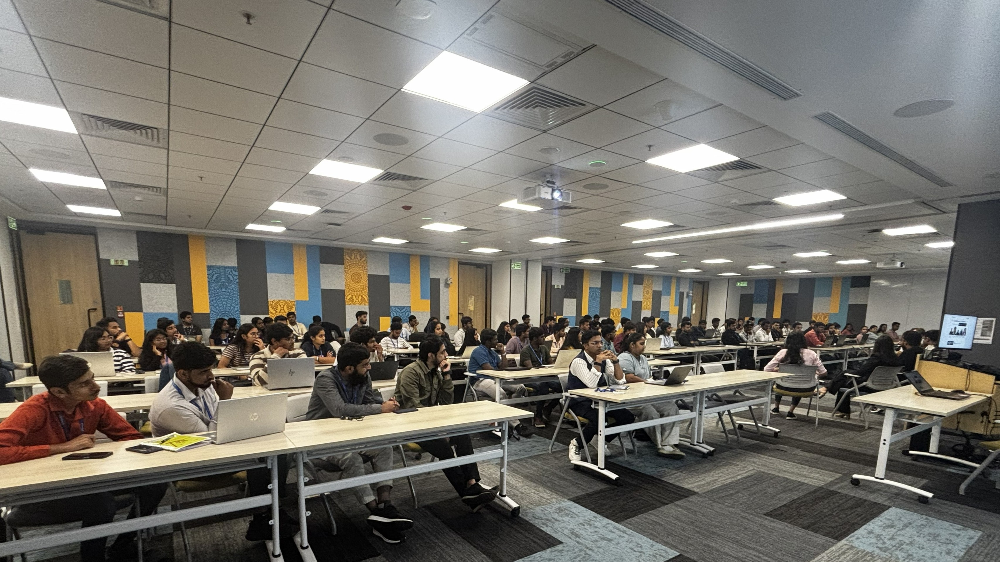
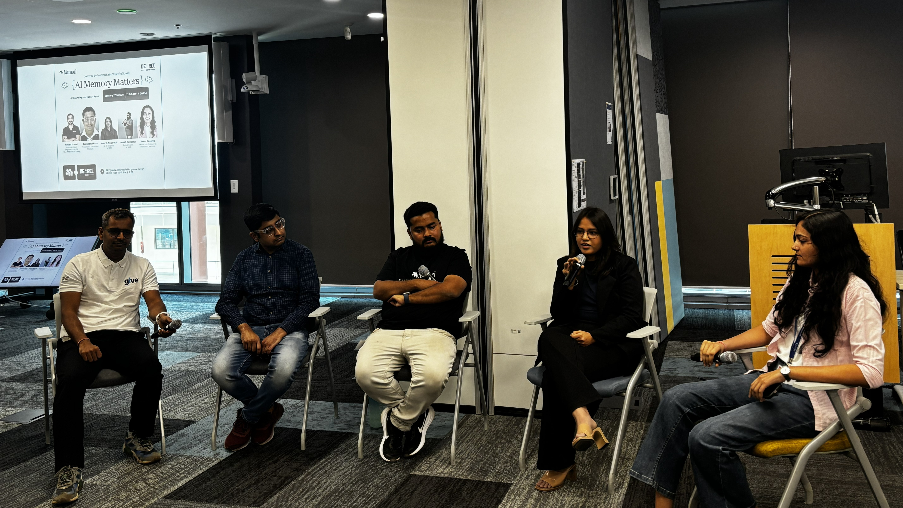
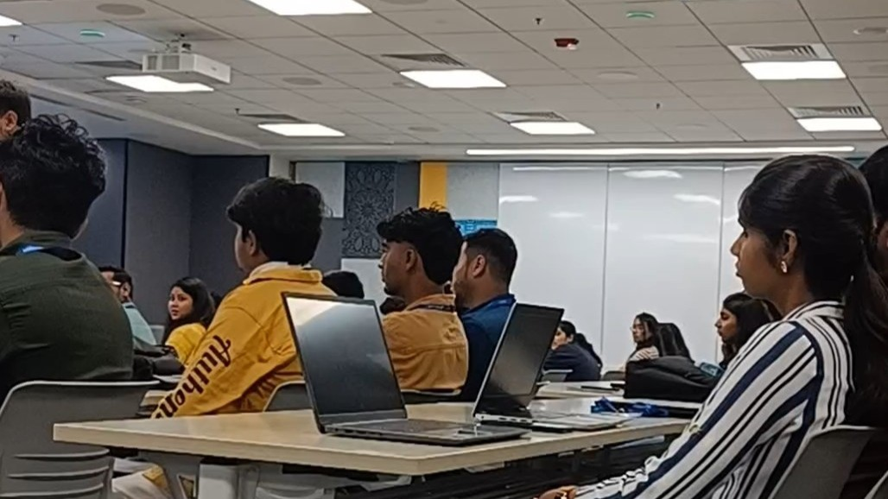
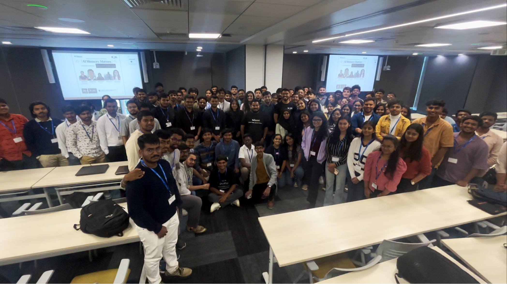

I didn't go in expecting anything very different. Most AI events recently tend to revolve around similar topics — prompt engineering, model capabilities, token limits, new tools.
So I assumed this would follow a similar pattern. But within the first 20–30 minutes, it was clear the conversation was going somewhere else.
The session didn't start with prompts or models. It started with a question.
How do AI systems actually remember things?
Not in a theoretical sense — but in a way that works when users interact with them repeatedly over time. That shift in focus made the entire discussion feel more practical from the start.

A conversation, not a set of talks
Instead of prepared presentations delivered one after another, the panel discussion was conversational. Points built on each other naturally. Five speakers, different perspectives.
Because most real applications have users who come back — ask follow-up questions, expect continuity, sometimes expect the system to "know" them. That's where memory stops being optional.
Relevance matters more than size
One idea that surfaced early — and kept resurfacing — challenged a common assumption about context windows.
If the system remembers everything, it also risks remembering things that are no longer useful.
Feeding more data into a model doesn't automatically improve output. And over time, stale or irrelevant memory can actually reduce response quality. That reframe led to a sharper question.
What should an AI system remember — and what should it forget?
It's not something we usually think about when building small projects. In production systems, it becomes critical. Memory is not just storage — it directly affects how the system behaves.

Structure, retrieval, and privacy
The discussion moved into how memory is actually organized — which turned out to be more complex than it sounds at scale.
- Organizing past interactions
- Retrieving the right info at the right time
- Keeping the system efficient
Once you start persisting user data over time, questions of responsibility arrive immediately. Designing for privacy-awareness, transparency, and control from the start — not as an afterthought.
These concerns are easy to ignore in small-scale projects, but they can't be retrofitted into production systems. Designing for them from the beginning is the difference.
Demo systems vs. production systems
One part of the discussion drew a distinction that doesn't get enough attention — and one I found immediately recognizable.
- Retrieving irrelevant information
- Storing redundant or contradictory data
- Managing performance as interactions grow
A memory system that works well in testing can degrade in subtle ways at scale — and the degradation is often invisible until something fails.
Long-term reasoning — when memory works
The panel also connected memory to something larger: a system's ability to reason across time. When memory is designed well, it unlocks capabilities that context windows alone can't provide.
- More consistent responses over time
- Better understanding of context
- Fewer repeated inputs from users
Long-term reasoning only works if the memory system underneath it is properly designed. An ill-designed system can cause more harm than having no memory at all — giving confident answers based on stale context.

The most relatable part of the session
Instead of a complex architecture diagram, the demo showed how memory can be added to an AI agent in a relatively simple, step-by-step way. Not overly simplified — but practical enough to see how it actually gets implemented.
The key thing it showed: adding memory didn't require rebuilding from scratch. It could be integrated incrementally. That made the idea feel genuinely approachable rather than a distant architectural concern.
What people stayed to talk about
A lot of people stayed back after the session ended — usually a sign that something landed well. The conversations were practical and varied.
- How teams are currently handling memory in their projects
- Vector databases vs. custom approaches
- Scaling challenges with persistent memory
- What no standard approach yet looks like in practice
Some people were still experimenting. Others were integrating memory into real applications and hitting real friction. No single pattern had emerged as the standard — and that was clear from the variety of approaches people described.

Connecting dots I already had
By the end, it didn't feel like I had learned something entirely new. It felt like something I half-understood had been explained more precisely. Three things clicked into place.
A focused session that stayed focused
This was a well-structured event precisely because it didn't try to cover everything. One topic, explored in depth, from multiple angles. That's rarer than it sounds.
For me, the shift it prompted was directional — from optimizing for outputs to thinking about how systems are designed. That's a longer-term concern, and a more useful one.
AI doesn't just need more context. It needs better ways to remember what actually matters.
The question isn't how much to store. It's what to keep, what to discard, and how to retrieve the right thing at the right moment.